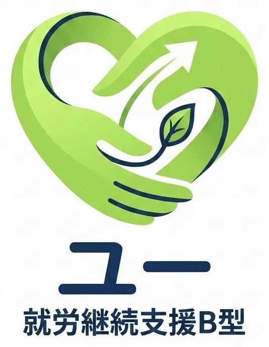
大阪市 就労継続支援B型事業所
安心できる居場所、
あります。
今日も出来た!を増やしていく。
働くことへの不安や悩みに寄り添いながら、一人ひとりが自分のペースで過ごし、できることを少しずつ増やしていける場所です。まずは見学だけでも、お気軽にどうぞ。
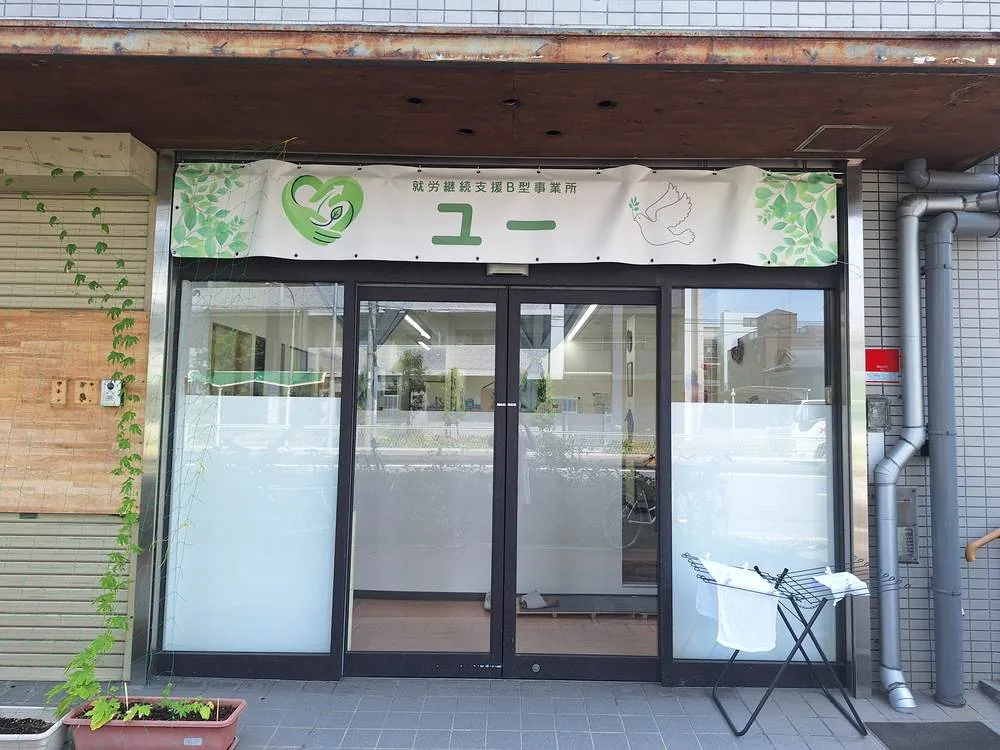
🌿 2026.9.26(土) 10:00〜15:00 ユーマルシェ開催! 手作り商品の販売・ミニゲーム・飲食コーナー｜入場無料 くわしく見る →
“普通”を目指すのではなく、あなたらしく働く。
こんなお悩みはありませんか
一人で抱え込まなくて、大丈夫です
働くこと、これからのことに不安を感じるのは、自然なことです。
失敗したらどうしよう、続けられるか不安。そんな気持ちのまま、少しずつ慣れていく方がたくさんいます。
無理に話さなくても大丈夫。自分のペースで、少しずつ周りとの距離を縮めていけます。
行き場がほしい、生活のリズムを整えたい。そんな気持ちに寄り添う居場所でありたいと思っています。
週1日、短時間からでも大丈夫。ご本人のペースに合わせて通う日数や時間を相談できます。
ご家族からのご相談も歓迎しています。スタッフが一緒に考えます。
パソコン作業から手作業まで、幅広く用意しています。見学で実際の様子をご覧いただけます。
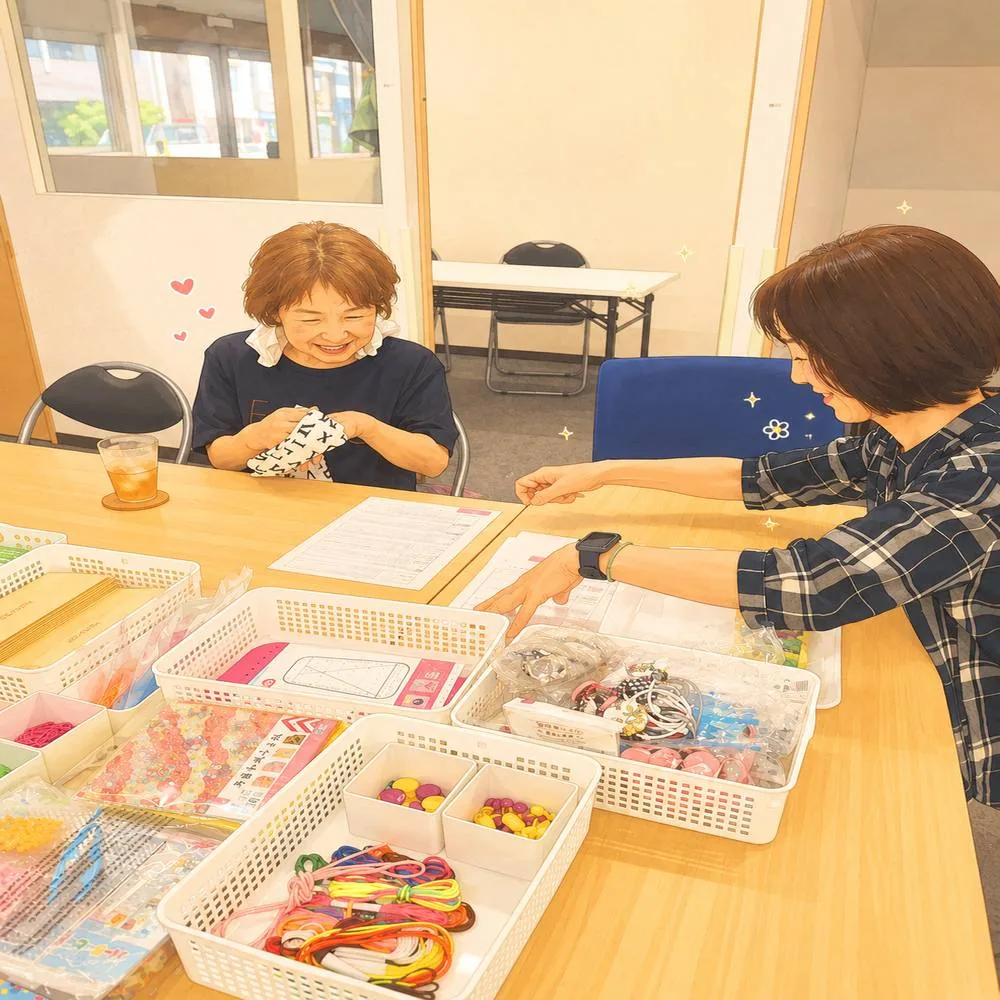
私たちの理念
「安心できる居場所づくり」
働くことへの不安や悩みに寄り添いながら、一人ひとりが自分のペースで過ごし、できることを少しずつ増やしていける環境を目指しています。うまくいかない日があってもいい。ここに来れば大丈夫、そう思ってもらえる場所でありたいと考えています。
作業内容
できることを、少しずつ
得意なことや興味のあることから、無理なく始められます。
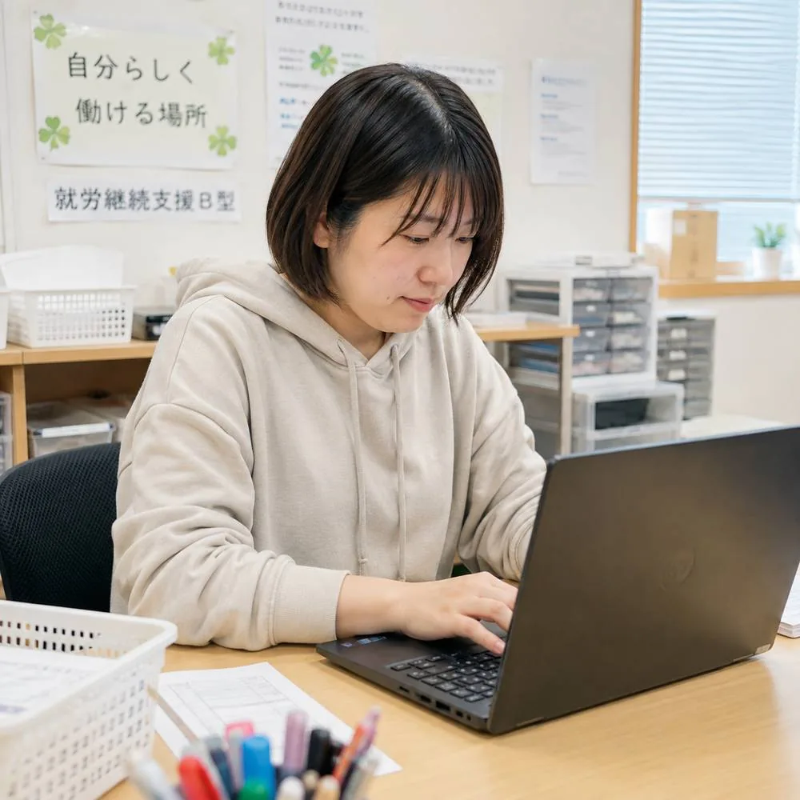
パソコン作業
データ入力や簡単な資料作成など、基本操作から丁寧にサポートします。
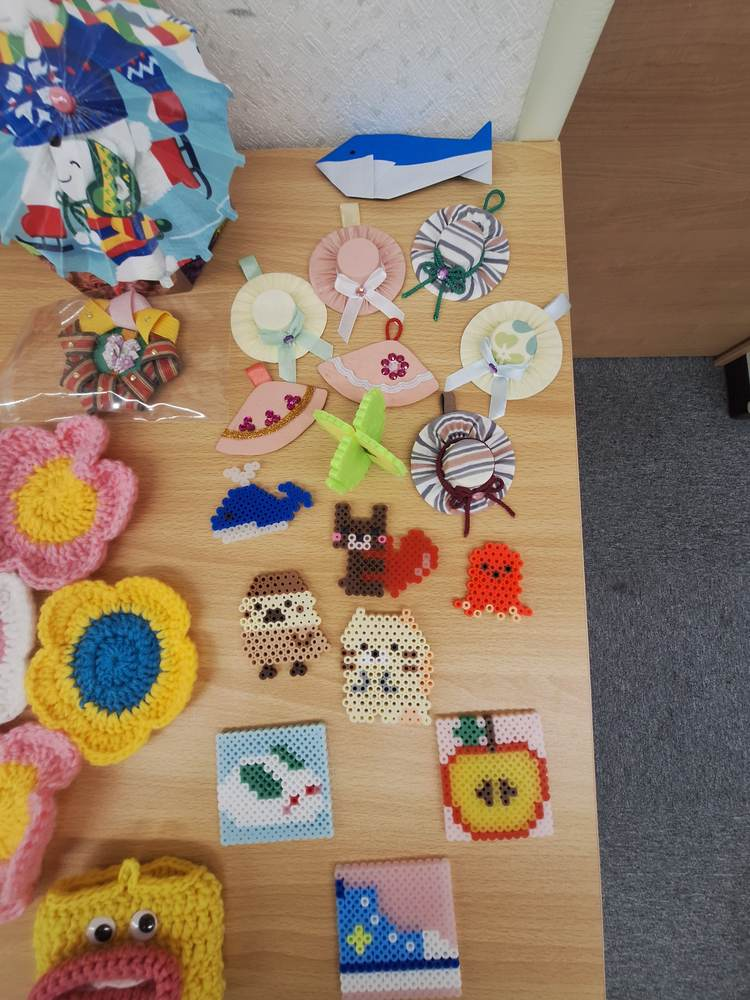
ビーズアクセサリー制作
色とりどりのビーズを使い、アクセサリーを一つひとつ手作りしています。
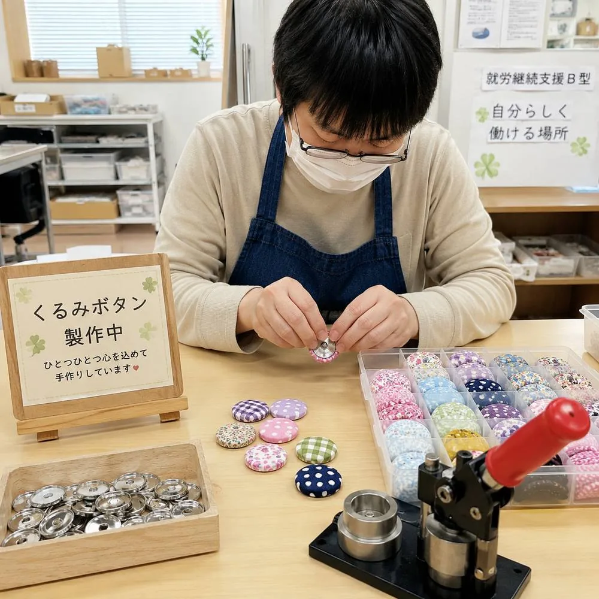
くるみボタン制作
布地を選びながら作る、やさしい風合いのくるみボタンです。
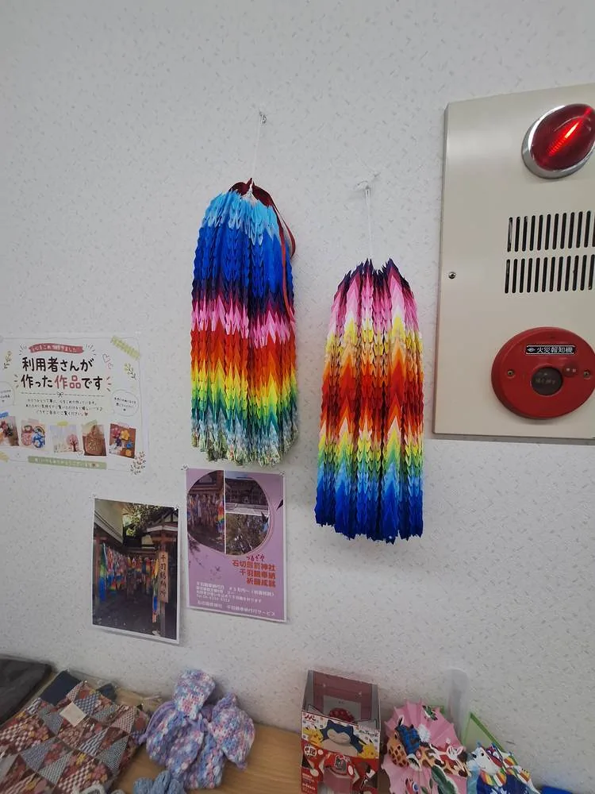
折り紙
集中して手を動かす時間を大切に、丁寧な折り作業に取り組みます。
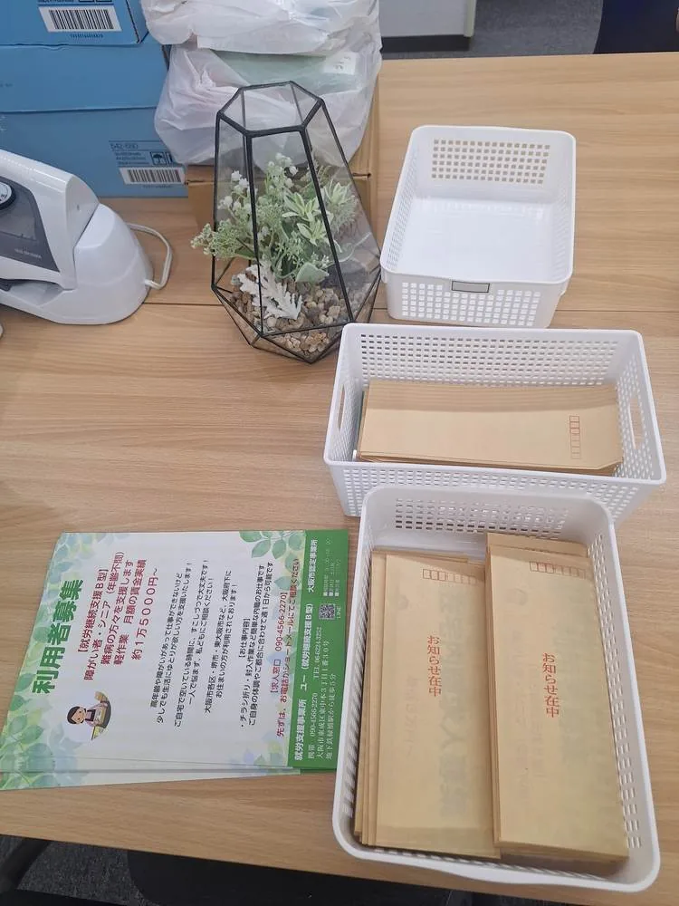
チラシ折り
正確さとスピードを少しずつ身につけていく軽作業です。
封入作業
企業様からお預かりする封入作業なども、チームで協力して行います。
これからのこと
小さな一歩が、未来につながる。
自立とは、一人ですべてを頑張ることではありません。自分に合った方法で、自分らしく生活し、自分らしい未来を選んでいくこと。私たちは、そのお手伝いをします。
ご利用までの流れ
まずはお気軽にお問い合わせください
お問い合わせ
まずはお気軽にご連絡ください。ご相談だけでも大丈夫です。
見学
事業所の雰囲気や作業内容を実際にご覧いただきます。
体験利用
ご希望に合わせて、無理のない範囲で体験していただきます。
ご利用開始
一人ひとりに合わせた計画を立て、あなたのペースでスタートします。
ステップアップ
できることを増やしながら、その先の目標に向かって一緒に進みます。
まずは、話してみませんか?
- 「働きたいけれど、まだ自信がない」
- 「自分に何ができるかわからない」
- 「まずは見学だけしてみたい」
そんなご相談、大歓迎です。見学・相談はお気軽にどうぞ。
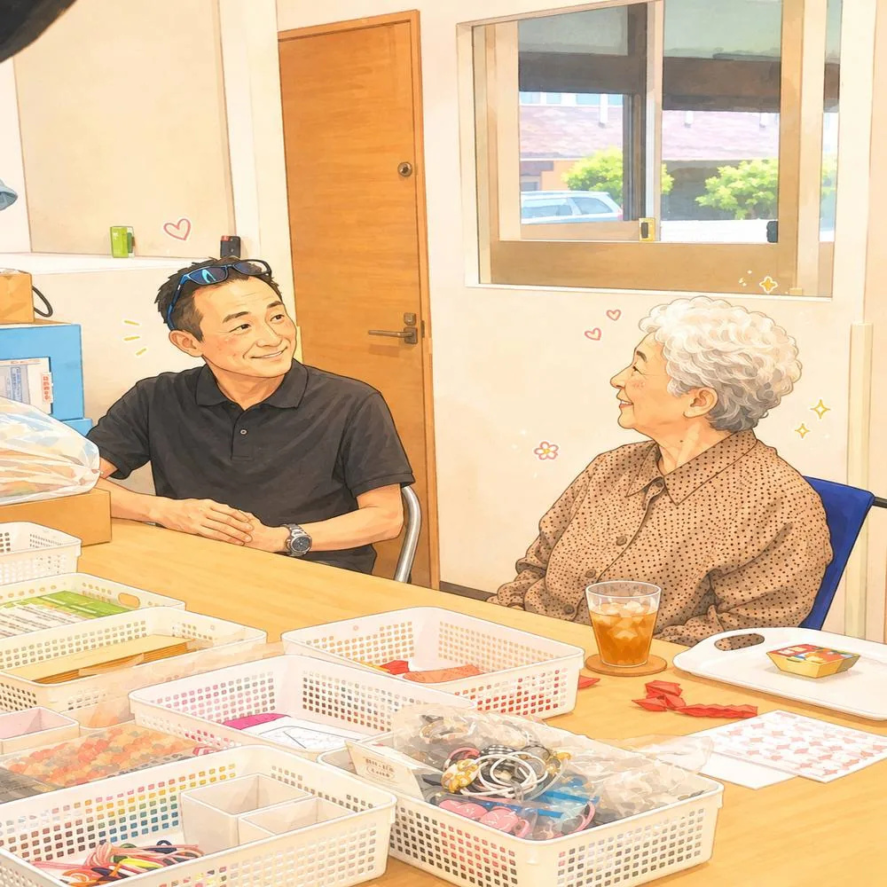
ABOUT US
事業紹介
「安心できる居場所づくり」を理念に、大阪市で就労継続支援B型事業所を運営しています。
事業所概要
「ユー」について
「ユー」は、大阪市東成区にある就労継続支援B型事業所です。“普通”を目指すのではなく、あなたらしく働くことを大切に、働くことに不安を感じる方が、自分のペースで少しずつ社会とのつながりを持てるようにサポートしています。パソコン作業や手芸などの軽作業を通じて、できることを一緒に見つけていきます。
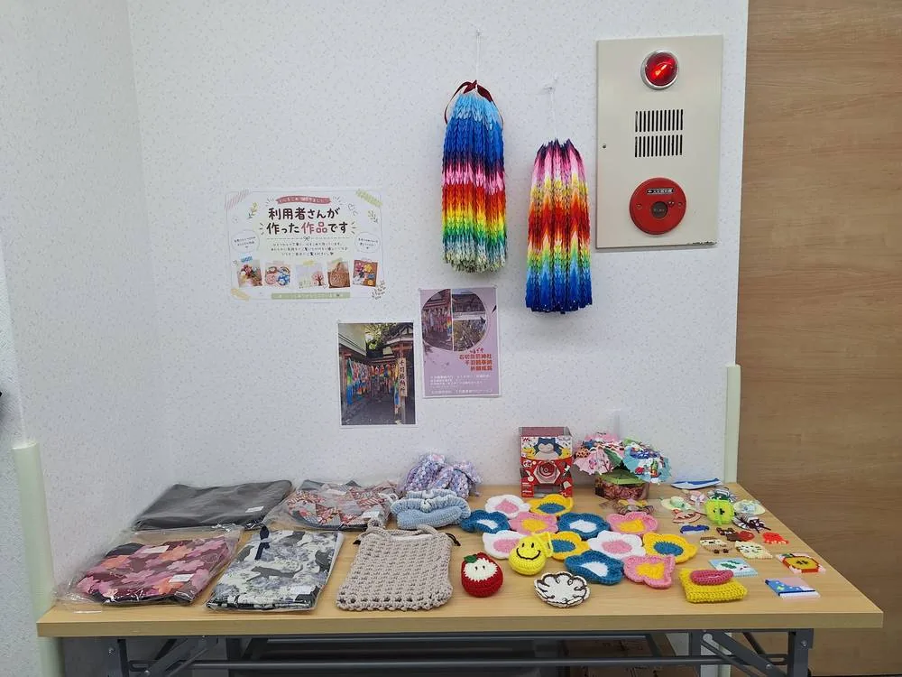
事業所データ
施設概要
| 事業所名 | 就労継続支援B型事業所 ユー |
|---|---|
| 所在地 | 大阪市東成区東中本三丁目1番30号 |
| 電話番号 | 06-6224-3252 |
| FAX番号 | 06-6224-3253 |
| サービス種別 | 就労継続支援B型 |
| 定員 | 40名 |
| 休業日 | 土日・祝日、お盆、GW |
| サービス提供時間 | 9:30〜17:00 |
| 運営法人 | 合同会社ユー |
支援方針
一人ひとりに合わせた支援を
通う日数や作業内容は、ご本人の状態に合わせて柔軟に調整します。
スタッフが日々の様子を見守り、話しやすい環境を大切にしています。
得意なことを伸ばしながら、少しずつ新しい作業にも挑戦できます。
一日の流れ
ある日のスケジュール
| 9:30 | 登所・朝の会 |
|---|---|
| 10:00 | 午前の作業 |
| 12:00 | 昼休憩 |
| 13:00 | 午後の作業 |
| 15:30 | 片付け・終わりの会 |
| 17:00 | 退所 |
EVENT
出店・イベント情報
マルシェや出店など、ユーの利用者がつくった作品をお届けする機会をご案内します。
開催予定 ─ 2026.9.26(土)
ユーマルシェ
見て、知って、つながる一日。
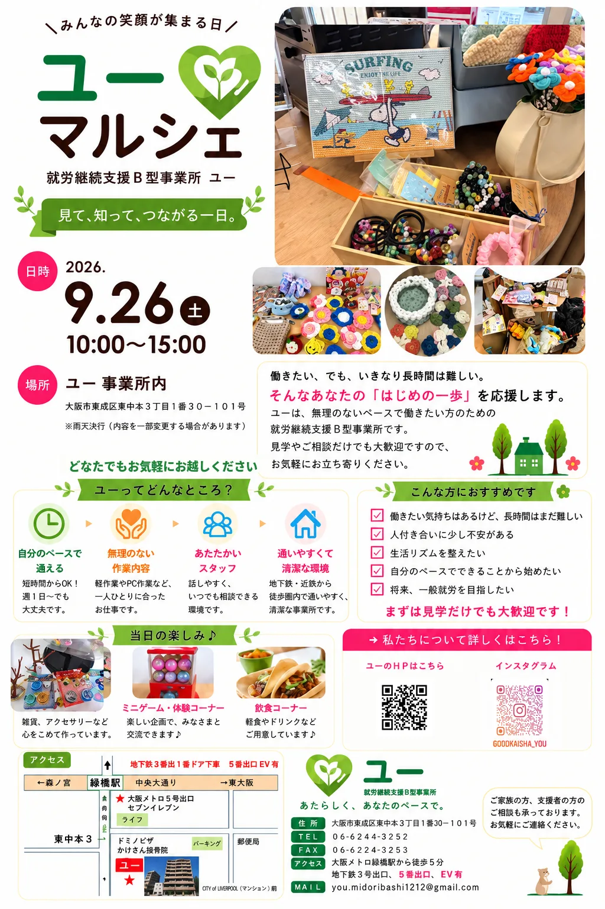
| 日時 | 2026年9月26日(土) 10:00〜15:00 |
|---|---|
| 場所 | ユー 事業所内（大阪市東成区東中本三丁目1番30号） |
| 料金 | 入場無料・出入り自由（お好きな時間にお越しいただけます） |
| 内容 | 手作り商品の販売／ミニゲーム・体験コーナー／飲食コーナー |
雨天決行です（内容を一部変更する場合があります）。
見学・ご相談だけでも大歓迎ですので、当日はスタッフにお気軽にお声がけください。
※現在準備中のため、日時・内容は変更になる場合があります。
2026.8.24
庄内のカフェさんに出店してきました♪
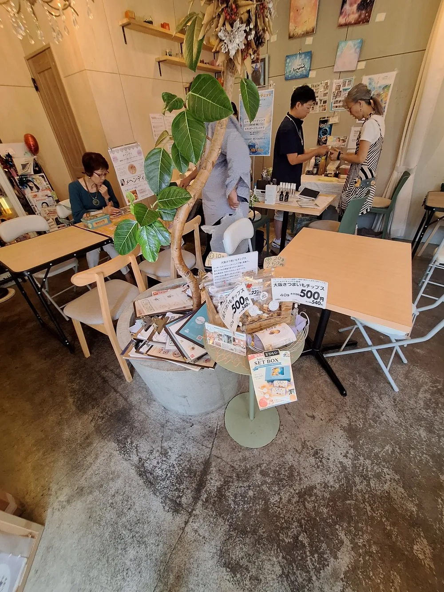
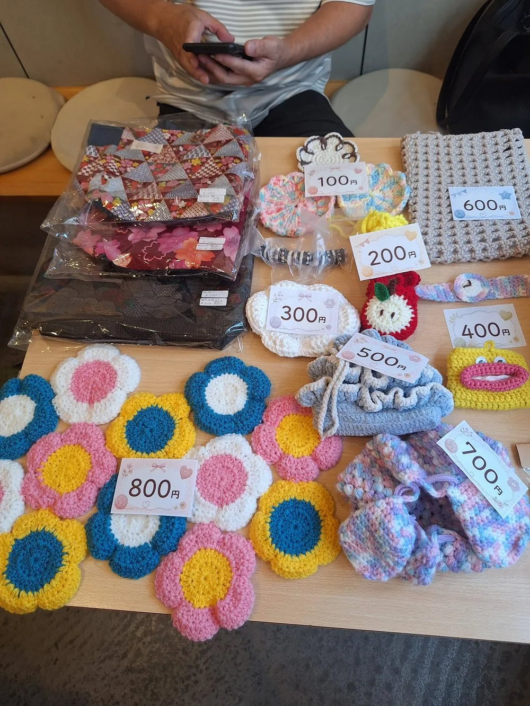
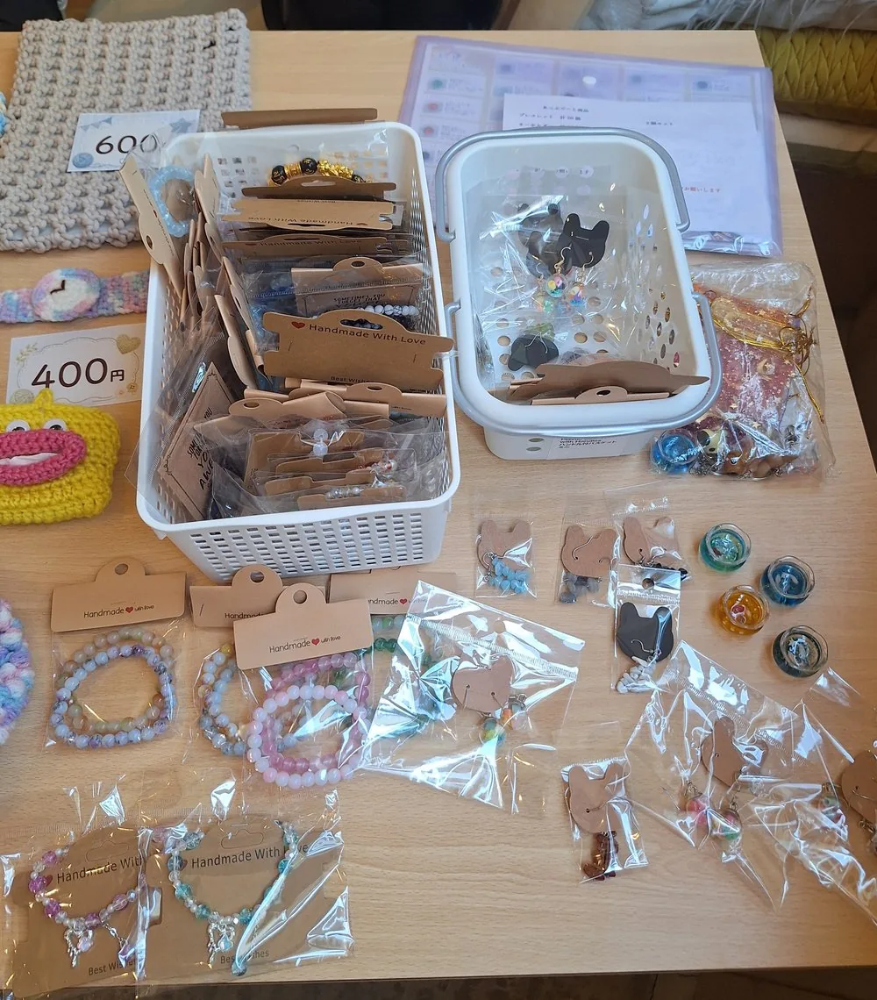
豊中市・庄内にあるカフェさんのご厚意で、机をお借りして出店させていただきました🌷
かぎ針編みのお花のコースターやミニポーチ、天然石のブレスレット、キーホルダーなど、利用者さんが一つひとつ心を込めて作った作品を並べました。
「かわいい!」「これ手作りなんですか?」と声をかけてくださる方もたくさんいて、みんなにとってとても良い経験になりました。足を止めてくださった皆さま、本当にありがとうございました🙏
今後の出店・イベント情報も、随時こちらでお知らせしていきます。
GUIDE
利用案内
ご利用対象となる方、お手続きの流れ、費用についてご案内します。
ご利用対象の方
こんな方にご利用いただいています
主に精神障害のある方・発達障害のある方・知的障害のある方、また何らかの理由で働くことが難しい方を対象としています。
働くことが難しい方
私たちの理念は「安心できる居場所づくり」です。働くことへの不安や悩みに寄り添いながら、一人ひとりが自分のペースで過ごし、できることを少しずつ増やしていける環境を目指しています。
お住まいの市区町村が発行する障害福祉サービス受給者証をお持ちの方、またはこれから取得を予定されている方がご利用いただけます。受給者証の申請についてもご相談いただけます。
連携先の方へ
相談支援専門員・医療機関・行政機関の皆様へ
利用希望者様のご紹介や、見学同行のご相談も承っております。事業所の空き状況や受け入れ可能な状態については、お電話にてお気軽にお問い合わせください。パンフレット・重要事項説明書などの資料もご用意しています。
ご利用の流れ
ご利用開始までのステップ
お問い合わせ
お電話・お問い合わせフォームより、ご連絡ください。ご本人・ご家族・関係機関の方、どなたからでも構いません。
見学
事業所内をご案内し、作業内容や雰囲気をご覧いただきます。ご質問にも丁寧にお答えします。
体験利用
実際に数日間通っていただき、作業や事業所の雰囲気を体験していただきます。
受給者証の申請
お持ちでない場合は、お住まいの市区町村窓口での申請をサポートします。
契約・ご利用開始
契約手続き後、通所がスタートします。通う日数や時間は相談しながら決めていきます。
費用について
利用料金
利用料金は、お住まいの市区町村が発行する受給者証に記載された自己負担上限月額の範囲内で決定されます。世帯の所得に応じて上限額が設定されており、多くの方が少ない負担でご利用いただいています。詳しい金額については、お気軽にお問い合わせください。工賃(お給料)についてもご説明いたします。
よくあるご質問
FAQ
はい、見学・体験を随時受け付けています。まずはお気軽にお問い合わせください。
見学・体験の後、ご本人の希望や状況をお伺いしながら利用開始までサポートします。
障害福祉サービスの利用には一定の要件があります。詳しくはお気軽にご相談ください。
体調や生活リズムに合わせて、無理のない利用から始めることができます。
パソコン作業、ビーズを使ったアクセサリー制作、くるみボタン制作、折り紙、チラシ折り、封入作業など、幅広い作業をご用意しています。
申し訳ございませんが、送迎は行っておりません。公共交通機関でのご来所をお願いしております。
昼食に関するご案内は、お問い合わせの際に詳しくご説明します。
作業内容や日数によって異なります。詳しくはお問い合わせ時にご説明します。
世帯の所得状況などによって異なります。多くの方が少ない負担でご利用いただいています。詳しくはお問い合わせください。
はい。経験や得意なこと、体調に合わせて取り組めます。
大丈夫です。まずは見学や体験を通して、あなたに合った過ごし方を一緒に考えていきます。
WORKS
作品紹介
利用者の皆さんが、一つひとつ心を込めて手作りした作品をご紹介します。
手作り巾着・ポーチ
和柄や花柄の布、編み込みのニット素材など、様々な巾着・ポーチを制作しています。
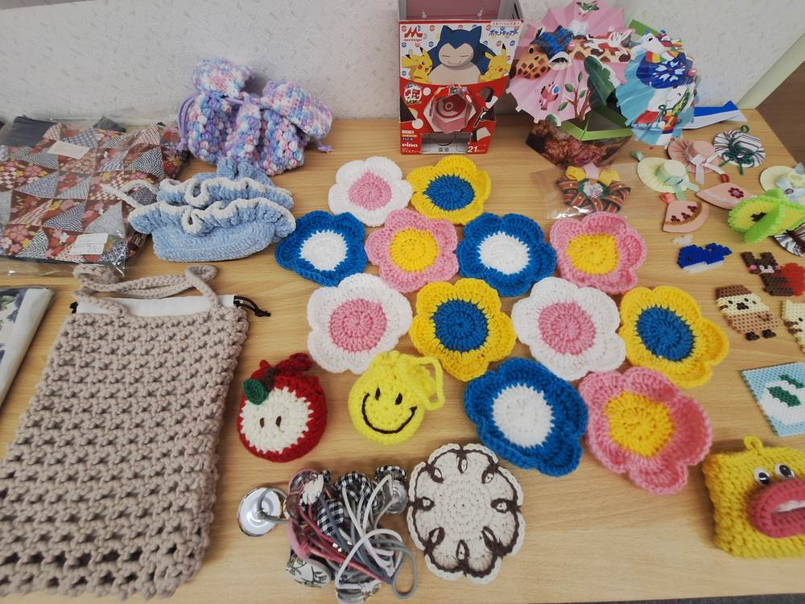
毛糸のお花モチーフ
色とりどりの毛糸で編んだお花のモチーフです。ブローチや飾りとしても人気です。
ニット巾着・お花モチーフ
やわらかな風合いの糸を使った巾着や、飾りにも使えるお花のモチーフです。
ビーズ・アイロンビーズ小物
ビーズを使ったアクセサリーや、アイロンビーズの動物・季節のモチーフです。
季節の折り紙飾り
色とりどりの折り鶴など、四季を感じられる折り紙作品です。
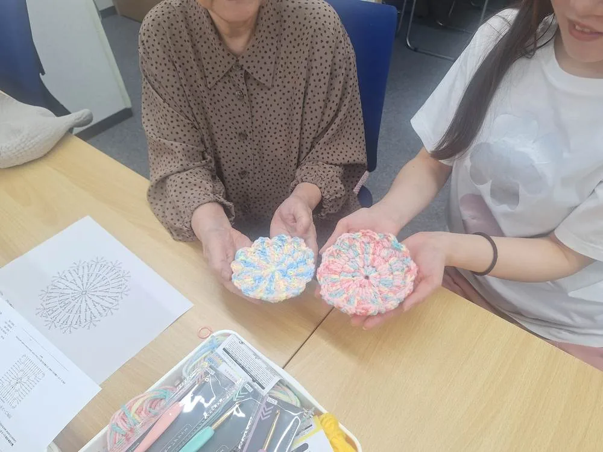
編み物コースター
模様編みで仕上げた、あたたかみのあるコースターです。
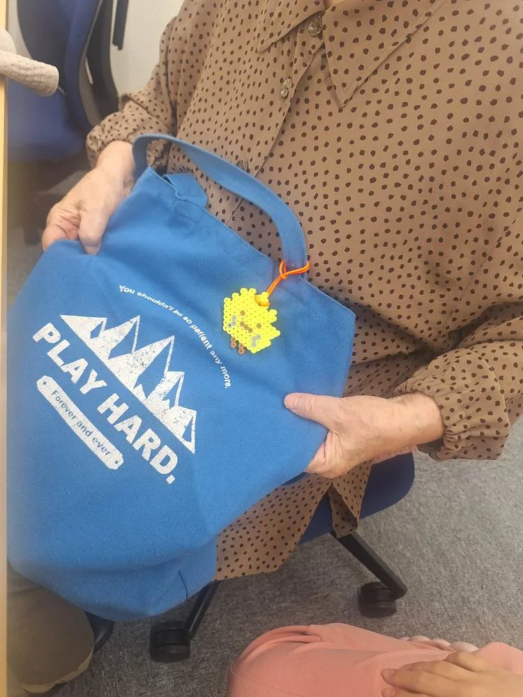
ビーズキーホルダー
アイロンビーズで作った、バッグにつけられるキーホルダーです。
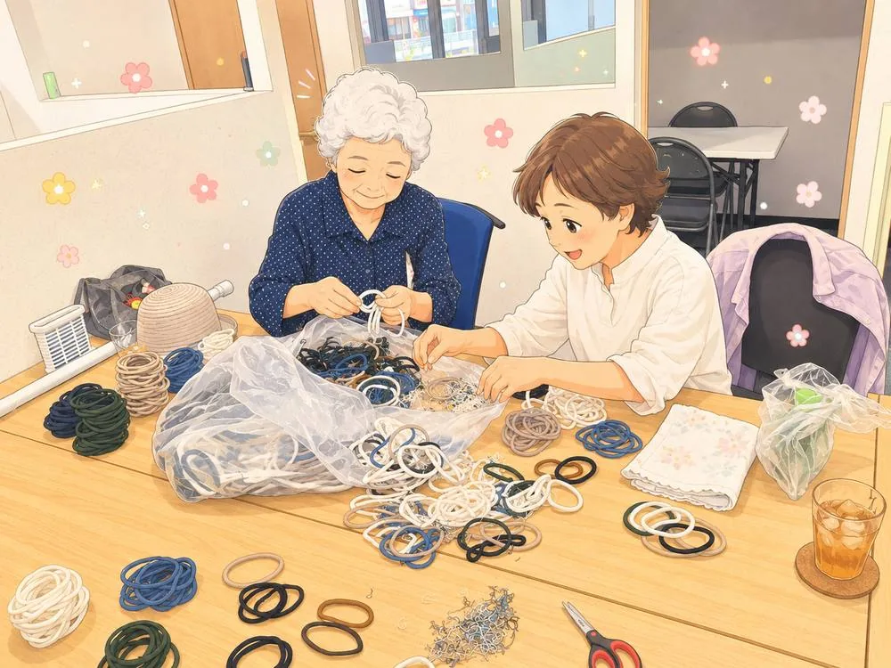
受託作業について
チラシ折り・梱包作業なども承ります
企業様・団体様からの軽作業のご依頼も受け付けています。チラシ折り、封入、簡単な梱包作業など、丁寧・正確な作業を心がけています。お見積りやご相談はお問い合わせフォームよりお気軽にどうぞ。
ACCESS
アクセスはこちら
大阪メトロ今里筋線・緑橋駅から徒歩圏内です。お車でお越しの際も、お気軽にお問い合わせください。
所在地・お問い合わせ先
駐車場の有無や詳しい道順について気になる方は、お電話またはお問い合わせフォームからお気軽にお尋ねください。
見学・相談を申し込む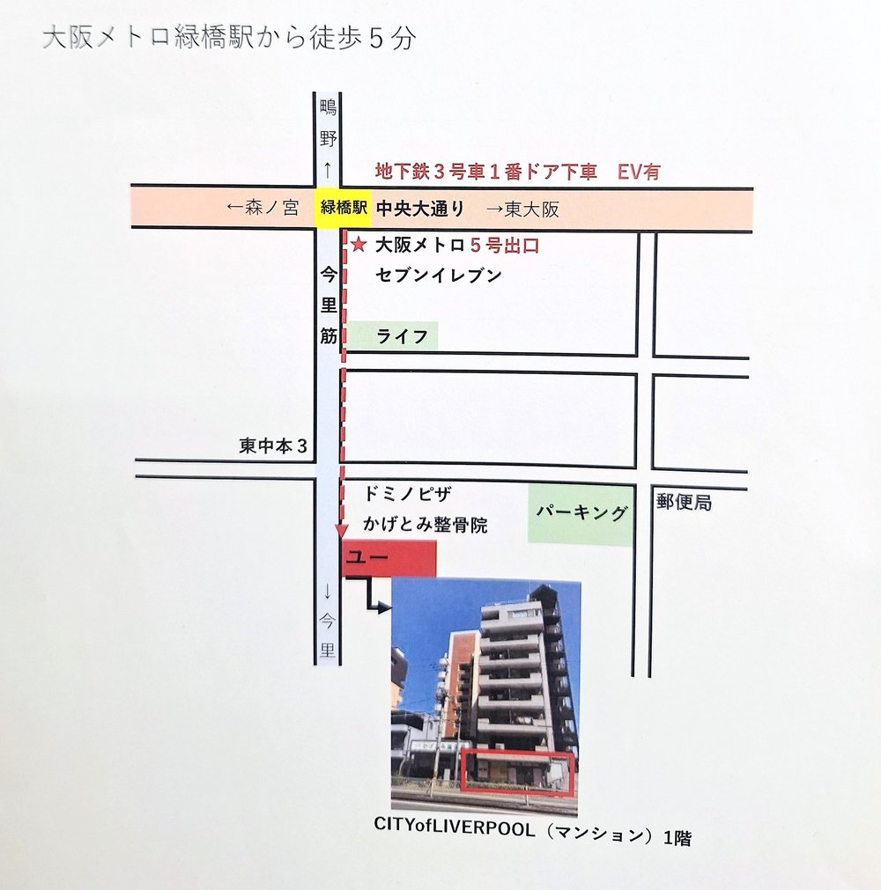
RECRUIT
一緒に働いてくれる仲間を募集中!🌱
"普通"を目指すのではなく、あなたらしく働く。
そんな場所を、一緒につくってくれる方を探しています。
🌼 事務職(職業指導員)スタッフ募集!
未経験の方も、大歓迎です
利用者さんの作業内容の説明やサポート、日々の記録づくり、関係機関とのやり取りなどをお任せします。福祉のお仕事が初めてでも大丈夫。まずは私たちと一緒に「安心できる居場所づくり」をしてみませんか?
応募・詳細は「ハローワーク求人プラス」の求人ページからご確認いただけます
CONTACT
お問い合わせ
見学・相談のお申し込み、その他ご質問など、お気軽にご連絡ください。
お問い合わせフォーム
事業所情報
見学を申し込まれた方・ご質問をいただいた方には、折り返しお電話もしくはメールをさせていただきます。